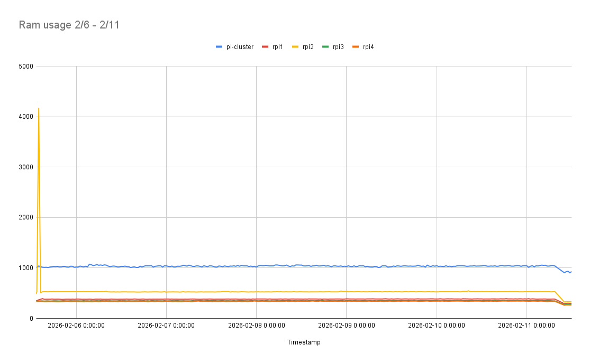
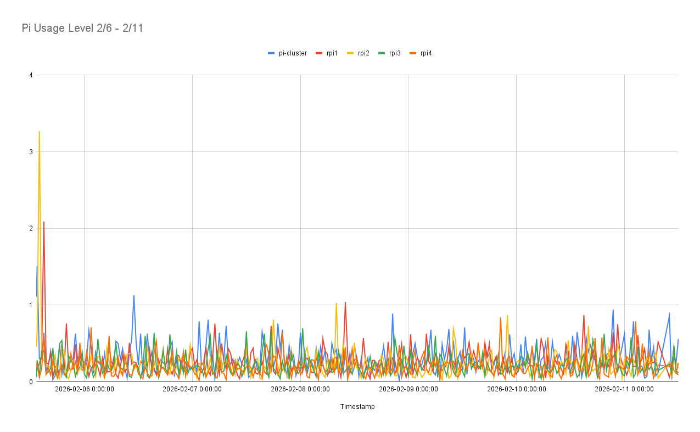
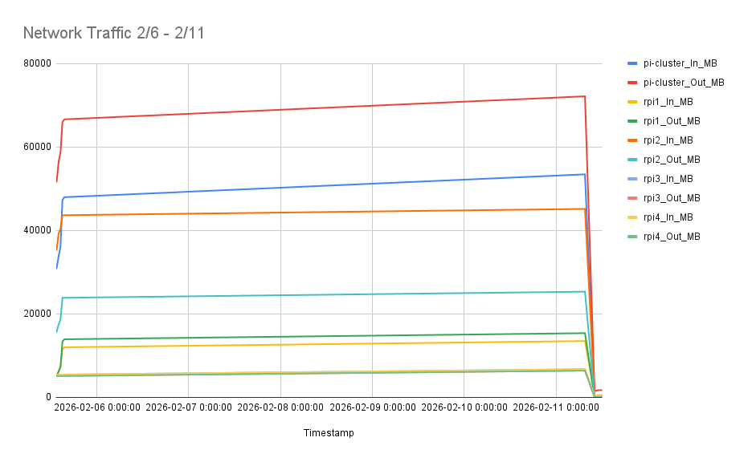
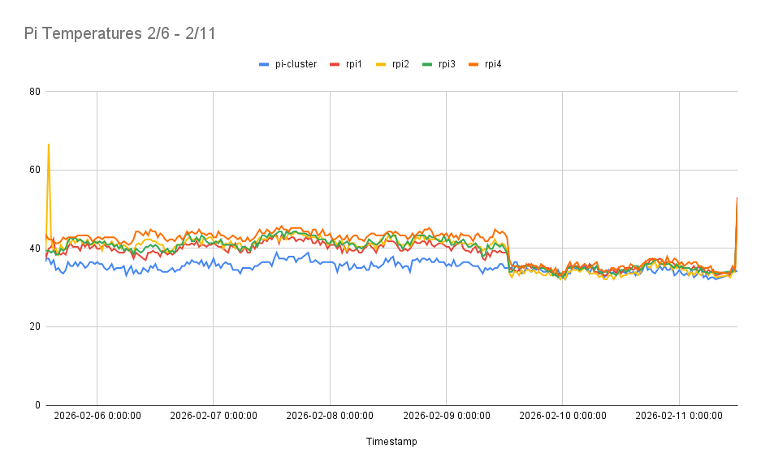
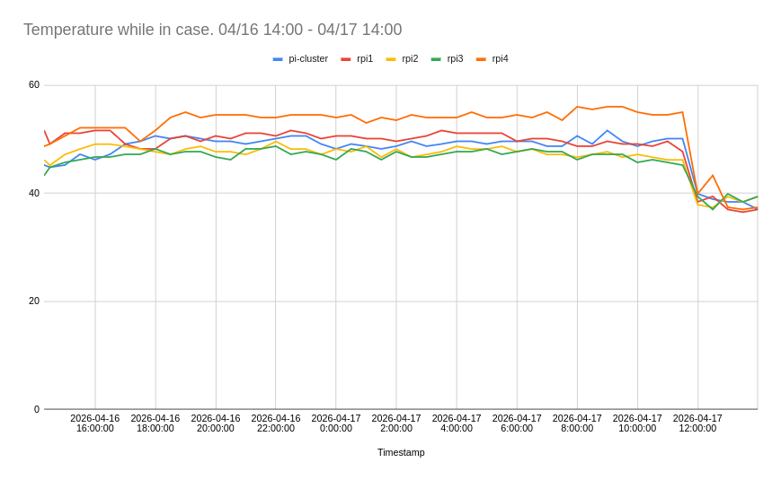

These graphs show system monitoring data collected over a 5-day period, with a new data point recorded every 30 minutes.
The AI processes were running but idle, not under intensive use.

RAM Usage

CPU Core Usage

Network Traffic

Temperature

Temperature (In Case)
Temperature over a 1 day period while the cluster was in its locker. It runs around ~10 degrees hotter than while outside and a drop can be seen at 12:00 on 4/17 when the lid was opened.
Raw Data
Download Links
RAM Usage
CPU Load
Throttling
Temperature
Temp In Case
CPU Clock
Total RAM
Unused RAM
Network Traffic